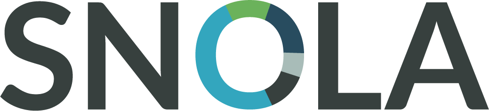

27-28 June 2016
The “LASI Spain 2016” International workshop is organized by the University of Deusto (UD) with the collaboration of SNOLA (Spanish Network of Learning Analytics) on June 27th to 28th at the campus of Bilbao.
Learning Analytics Summer Institute & Summer School